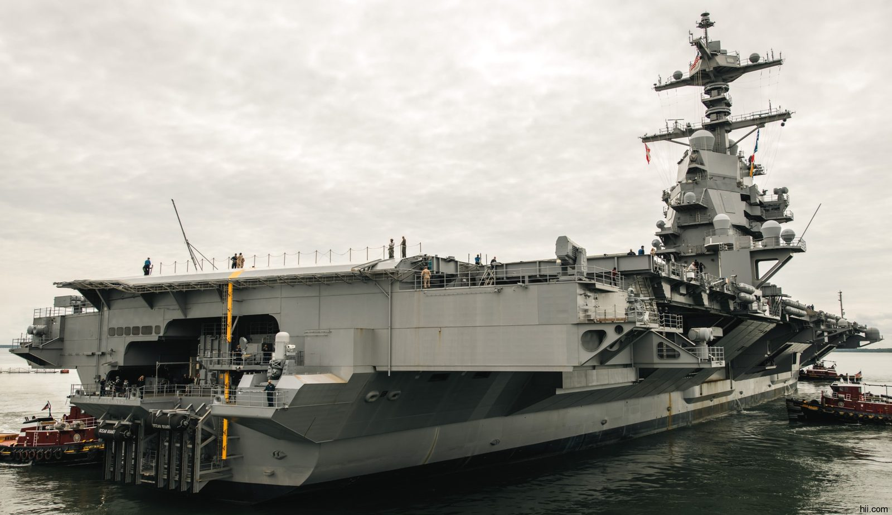

One carrier read to the cent. The same agents and servers for every weapon system.
CVN-79 is the deep case: its cost rebuilt on four ledgers, every figure tied to a page or a transaction. Nothing in the servers, the gate or the agents is specific to CVN-79. This page shows what that means for the people who brief, budget, estimate and audit weapon-system cost, from the Ford class to the F-35 to the 59 programs with a PB2027 MSAR.
For senior leaders, PEOs, CAPE, budget and audit offices Decision whether to extend this to the next program, and in what order
The portfolio is large, slow and moving, and its cost cannot yet be audited
- Eighth disclaimer of opinion, FY2025, over $4.65 trillion in reported assets (CRS IF12627).
- 26 material weaknesses, among them General PP&E, Government Property in the Possession of Contractors, and the Joint Strike Fighter program (DoD FY2025 AFR).
- Clean audit opinion required by December 31, 2028 (GAO-25-108052).
Measured on one hull, not projected
Each result links to the page or document that shows it.
You ask. Agents plan. MCP servers fetch. The gate checks. You decide.
The same seven steps run for every question, on any hull or program. The model never does the arithmetic and never writes to the record: tools compute, the gate decides what may be shown as fact, and a person applies every change.
Five users, five questions, traced through the stack
- Docsdocs_find_line_item, docs_tieout_document
FY2027 P-5c, SCN line 2001: $13,409.970M, closes to 0.000 (p.95) - One Hubcheck_claim
$13,529M held for human review: the same figure is CVN-80's baseline (E-17) - Analystanalyst_trace_entity
$9,098M on two HII prime contracts, 67.8% of the hull
- Docsdocs_find_line_item(2001, P-5c, PB2026 and PB2027)
Two exhibits, same line, two cycles - Docsdocs_get_table
Each cost category in both books, with its column labelled CVN-80 - One Hubtie_out
Both totals close; the movement is a variance with both pages
- Docsdocs_get_table (SCN PB2027 p.137)
Funding streams for line 2004 by fiscal year - Docsdocs_tieout_document
Closes to 0.000, including $1,429.682M funded in line 2001 - One Hubcheck_claim
Flags that line 2001 is not a hull key: it funds CVN-79 and part of CVN-81
- Analystanalyst_investigate_record
Obligations to the cent on both prime contracts - Analystanalyst_explain_residual
Award-level outlays cover 0.8% of obligations (gap G25) - One Hubrank_gaps, collection_requirement
When CIP is relieved (G14), whether GFE is counted twice (G15): each a request to a named office
- Creatorcreator_start_design, creator_add_data_source
A design handle; field roles and grants profiled as the user - Creatorcreator_design_tools, creator_review_server
One tool per question; a score on 11 dimensions - Creatorcreator_generate_project, creator_deploy_server
A tested server, deployed as the user's own app after approval
A new program gets its own governed server without a developer
An analyst brings a question and a Unity Catalog table. The Creator walks seven phases, each ending in something a person can review, and deploys the result as that person's own app. The ops server inside this hub was built this way. A new hull or program needs a key set and a regeneration, with no development project.
Each new program supplies data, not software
| Part of the stack | Reused unchanged | Each new hull or program adds |
|---|---|---|
| MCP A Creator | Ten tools, eight skills, generators, review, deploy gate | A question and a Unity Catalog table |
| Docs server | Reader, document map, tie-out, figure search; no CVN-79 logic in the reader | The program's PDFs in a volume; one hull-map entry per budget line for ships |
| Analyst server | Investigation method, evidence weights, collection requests | Contract numbers and program codes from the key set |
| Ops server | Exhibit-cell, obligation and register tools | Regenerated by the Creator over the program's tables |
| One Hub gate and registers | Promote, review, gap and lead routes; variance and gap types | The subject total; the floor is a share of it, so it moves with the program |
| Six agents and the work register | Hand-offs as row state changes | The subject name in five specialist prompts |
| Probe | Initialize, tools/list, one known answer, every 15 minutes | One known-answer check per new server |
Four hulls from the budget books already loaded
Each hull's Total Ship Estimate in the budget that procured it, against the latest book that still carries it, with its statutory cost cap. Then-year dollars, so the change mixes inflation with growth until normalized.

| Hull | Procurement-year budget | Latest budget | Change | Cost cap |
|---|---|---|---|---|
| CVN-78 Gerald R. Ford |
$10,488.937M SCN book PB2008 p.12 |
$12,907.000M SCN book PB2018 p.47 |
+$2,418.063M +23.1% |
none in the MSAR |
| CVN-79 John F. Kennedy |
$11,411.000M SCN book PB2013 p.16 |
$13,409.970M SCN book PB2027 p.95 |
+$1,998.970M +17.5% |
$12.936B CVN 78 MSAR, FY2027 p.8 |
| CVN-80 Enterprise |
$12,997.646M SCN book PB2018 p.47 |
$14,457.915M SCN book PB2027 p.95 |
+$1,460.269M +11.2% |
$13.529B CVN 78 MSAR, FY2027 p.8 |
| CVN-81 Doris Miller |
$12,450.695M SCN book PB2020 p.51 |
$15,615.934M SCN book PB2027 p.137 |
+$3,165.239M +25.4% |
$14.016B CVN 78 MSAR, FY2027 p.8 |
CVN-78's latest is PB2018, the last P-5c with a CVN-78 column. CVN-78 and CVN-79 procurement-year exhibits were printed in thousands of dollars.
Statutory cost caps
| CVN-79 Cost Limitation Baseline before December 2025 | $12.936B CVN 78 MSAR, FY2027 p.8 |
| CVN-79 Cost Limitation Baseline per the MSAR (E-17, under human review) under review
Read from an MSAR sentence, not the notification to Congress. The hub keeps $12.936B in force until a person confirms it (variance E-17, rule CAP-05). |
$13.529B CVN 78 MSAR, FY2027 p.8 |
| CVN-80 Cost Limitation Baseline | $13.529B CVN 78 MSAR, FY2027 p.8 |
| CVN-81 Cost Limitation Baseline | $14.016B CVN 78 MSAR, FY2027 p.8 |
The class over its life, and GAO's view of the hulls
| Ford class total acquisition cost, current estimate, then-year What the budget and acquisition ledgers must close to, for the class |
$114,843.4M CVN 78 MSAR, FY2027 p.22 |
| Ford class operating and support cost, then-year Four times acquisition: the budget tail every future appropriation carries |
$461,903.5M CVN 78 MSAR, FY2027 p.31 |
| Ford class disposal cost, then-year A future environmental and disposal liability that the balance sheet must estimate |
$65,029.2M CVN 78 MSAR, FY2027 p.31 |
| CVN 79 cost growth since 2021 (GAO) | over +$1.5B GAO-26-108457 p.145 |
| CVN 81 cost growth since last year (GAO) | +$1.2B GAO-26-108457 p.145 |
53,333.1 in the same row is the current estimate in base-year 2000 dollars.
What CVN-78 and CVN-79 teach the ships that follow
- 1CVN-78 sets the reference classGAO attributes lead-ship cost growth to technology development, design and construction, compounded by an optimistic budget estimate.GAO-17-575, p.2
- 2CVN-79 tests the learning assumptionThe Navy negotiated 18 percent fewer labor hours for CVN-79 than CVN-78, twice the Nimitz-class reduction and close to 9 million hours, which GAO calls unprecedented in 50 years of carrier construction. Its cost cap then rose from $11,398M to $12,936M.GAO-17-575, p.2 and p.24; CVN-79 cap history
- 3CVN-80 and CVN-81 inherit the assumption and the data problemsOne contract covers two hulls: the CVN-80/81 detail design and construction contract, awarded January 31, 2019. One budget line covers two hulls: CVN-81 draws $1,429.682M from line 2001. One number names two hulls: $13,529M is CVN-79's reported new baseline and CVN-80's baseline.CVN 78 MSAR FY2027, p.8 and p.10; SCN book PB2027, p.137
- 4What the pilot found recurs on every programA contract number is not a hull key, a budget line is not a hull key, award-level outlays cover under 1% of obligations, and capitalized value will never equal program cost. Each is in the variance or gap register with its evidence, ready for the next program.Ring 0 dossier, Parts I and N
The F-35: same method, lots in place of hulls
The Joint Strike Fighter is its own DoD material weakness, and its parts in contractor possession are the largest instance of the property problem the hub already registers for CVN-79. What changes is the unit of cost and the source documents; the stack does not.
| CVN-79 today | F-35 next | |
|---|---|---|
| Unit of cost | A hull (CVN-79) | A production lot and variant (F-35A, B, C) |
| Budget exhibits | SCN P-5c ship cost, P-8a, P-27 | Aircraft procurement P-40 and P-5 exhibits, plus RDT&E |
| Acquisition report | CVN 78 class MSAR, loaded | F-35 MSAR, PB2027, in the list below |
| Contracts | Two HII primes plus GFE contracts | Lot contracts, read from the MSAR's contract section |
| The accounting problem | When CIP is relieved; GFE counted twice or not at all | Parts in contractor possession, estimated over $220 billion (GAO-23-106098); its own material weakness (FY2025 AFR) |
| What carries over | Gate, registers, agents, docs reader, analyst method, Creator | The same, with the key set built from the MSAR |
Eight steps from public record to governed tools
The sequence that ran on CVN-79. The last column says where each step was proven.
- 1
Load the public recordThe program's MSAR, budget justification books and GAO reviews go into a Unity Catalog volume.Server and toolsdocs_parse_pdfOutputPages, tables and chunks, each with a page numberProven on CVN-7934 PDFs, 7,804 pages for CVN-79
- 2
Map each documentFind the cost exhibits and report sections without reading every page.Server and toolsdocs_document_map, docs_find_line_itemOutputExhibit and section page ranges by budget lineProven on CVN-79Every P-5c, P-8a, P-35, P-27 and P-10 in the PB2027 SCN book
- 3
Read and tie outRebuild each table with exact decimals and check every subtotal and total.Server and toolsdocs_get_table, docs_tieout_documentOutputTables usable as arithmetic, or a named failureProven on CVN-79814 of 818 tie-out checks pass
- 4
Build the key setContract numbers and cost-reporting status from the MSAR's contract section; appropriation, line and program element from the budget book.Server and toolsdocs_read_page, analyst_trace_entityOutputA key set for the programProven on CVN-79The CVN 78 MSAR lists the prime and GFE contracts on pp.38 to 44
- 5
Generate the program's serverPull contract actions for the key set into Unity Catalog; the Creator designs, reviews, generates and deploys a server over them.Server and toolscreator_start_design to creator_deploy_serverOutputA tested server owned by the requesterProven on CVN-79The ops server: 7 tools, golden set of 17
- 6
Investigate the recordsAttribute each incomplete record and name what is missing.Server and toolsanalyst_investigate_recordOutputRanked cases with citations and collection requestsProven on CVN-79Attribution raised from 42.2% to 75.8% of the hull
- 7
Govern every figureRoute each candidate figure through the gate; register variances and gaps with owners.Server and toolscheck_claim, tie_out, rank_gapsOutputVerified figures, leads and owned questionsProven on CVN-79$13,409.970M promoted; $13,529M held for review
- 8
Watch and deliverProbe each server every 15 minutes; publish pages, agents and Genie Code skills.Server and toolsaircarrier-mcp-probe, front centerOutputMonitoring evidence and a product leaders can readProven on CVN-791,234 of 1,234 known answers right
The stack, program by program, in phases
Each phase reuses everything before it and ends in a test that can be measured. Phase 0 is done; phase 1 runs on records already loaded; the rest are a plan.
CVN-79, the deep case
- Inputs
- 34 PDFs, two prime contracts, 1,875 transactions
- New work
- The stack itself
- Exit test
- P-5c closes to 0.000 on two axes; 88.4% vs 14.5% on sealed questions
The Ford class, budget and acquisition
- Inputs
- Already loaded: 22 SCN books, CVN 78 MSAR, GAO-26-108457
- New work
- Hull map per budget line and year; subject total per hull in the gate
- Exit test
- Each hull's P-5c closes on two axes with page citations
Ford-class contracts and carrier equipment
- Inputs
- Contract actions for the CVN-80/81 two-ship award; the AAG, AMDR and CEC MSARs
- New work
- Key sets per hull; the Creator regenerates the ops server with a hull filter
- Exit test
- Obligations to the cent per contract; the GFE gap (G15) narrowed
The F-35
- Inputs
- F-35 MSAR, aircraft procurement books, lot contracts
- New work
- Lots in place of hulls; contractor-held property as a gap family
- Exit test
- Lot estimates tie out; property gaps registered with owners
Navy shipbuilding
- Inputs
- 29 SCN ship lines already loaded; nine ship MSARs
- New work
- One hull-map entry per line
- Exit test
- Tie-out rate published per ship line
The 59 MSAR programs
- Inputs
- 59 PB2027 MSARs, one DoD template
- New work
- A key set per program, built from its own MSAR
- Exit test
- N of 59 parsed, M tie out, contracts found per program
The accounting ledger at scale
- Inputs
- Service general ledger and Advana access (outside this hackathon)
- New work
- CIP relief and GFE capitalization per program
- Exit test
- One program's asset value traced to transactions, toward December 31, 2028
The 59 programs with a PB2027 MSAR
Every MSAR follows one DoD template, so the docs server's reader applies to all of them. Only the CVN 78 MSAR is loaded today. Service and type are assigned from the program name; confirm them against each report on load.
| Program | Service | Type | Tier | SCN line, PB2027 P-5c page | Note | MSAR |
|---|---|---|---|---|---|---|
| CVN 78 Gerald R. Ford class | Navy | Ship | Loaded | LI 2001, 2004 · p.95, 137 | Loaded and parsed: 76 pages, 78 tables | |
| DDG 51 | Navy | Ship | Budget book loaded | LI 2122 · p.267, 269 | ||
| Expeditionary Fast Transport | Navy | Ship | Budget book loaded | LI 3043 · p.385 | ||
| LHA 6 America class | Navy | Ship | Budget book loaded | LI 3041 · p.352 | ||
| LPD 17 San Antonio class | Navy | Ship | Budget book loaded | LI 3010 · p.326 | SCN line 3010 is LPD Flight II; confirm on load that the MSAR covers it | |
| SSBN 826 Columbia class | Navy | Ship | Budget book loaded | LI 1045 · p.55 | ||
| Ship to Shore Connector | Navy | Ship | Budget book loaded | LI 5112 · p.464, 465 | ||
| SSN 774 Virginia class | Navy | Ship | Budget book loaded | LI 2013 · p.179 | ||
| T-AGOS 25 | Navy | Ship | Budget book loaded | LI 5030 · p.421 | ||
| T-AO 205 John Lewis class | Navy | Ship | Budget book loaded | LI 5025 · p.412 | ||
| Advanced Arresting Gear (AAG) | Navy | Ship system | Ford-class equipment | Ford-class equipment; GA-EMS contract N00019-14-C-0037 is in the CVN-79 key set | ||
| AMDR family of radars | Navy | Ship system | Ford-class equipment | Confirm on load whether it carries EASR, the CVN-79 radar on a multi-hull contract | ||
| Cooperative Engagement Capability | Navy | Ship and aircraft system | Ford-class equipment | Confirm on load whether carriers are in its quantities | ||
| AARGM-ER | Navy | Missile | Report only | |||
| Amphibious Combat Vehicle family | Marine Corps | Ground vehicle | Report only | |||
| AH-64E Remanufacture | Army | Aircraft | Report only | |||
| AIM-9X Block II | Navy | Missile | Report only | |||
| Armored Multi-Purpose Vehicle | Army | Ground vehicle | Report only | |||
| B-52 RMP | Air Force | Aircraft modification | Report only | |||
| CH-53K | Navy | Aircraft | Report only | |||
| CIRCM | Army | Aircraft survivability | Report only | |||
| E-130J | Navy | Aircraft | Report only | |||
| E-2D Advanced Hawkeye | Navy | Aircraft | Report only | |||
| Evolved Strategic SATCOM | Space Force | Space | Report only | |||
| F-15 EPAWSS | Air Force | Aircraft system | Report only | |||
| F-15EX | Air Force | Aircraft | Report only | |||
| F-35 Lightning II | Joint | Aircraft | Report only | Its own material weakness; contractor-held parts estimated over $220B (GAO-23-106098). Ring 0 Part J already frames it | ||
| G/ATOR | Marine Corps | Radar | Report only | |||
| GPS IIIF | Space Force | Space | Report only | |||
| HH-60W | Air Force | Aircraft | Report only | |||
| Integrated Air and Missile Defense | Army | Air and missile defense | Report only | |||
| ICBM Fuze Modernization | Air Force | Strategic | Report only | |||
| Infrared Search and Track | Navy | Aircraft system | Report only | |||
| Improved Turbine Engine Program | Army | Engine | Report only | |||
| JAGM | Army | Missile | Report only | |||
| JASSM-ER | Air Force | Missile | Report only | Redacted release; parse rate may be lower | ||
| Joint Light Tactical Vehicle | Army | Ground vehicle | Report only | |||
| KC-46A | Air Force | Aircraft | Report only | |||
| KC-130J | Navy | Aircraft | Report only | |||
| LCS Mission Modules | Navy | Ship mission systems | Report only | |||
| Long Range Standoff | Air Force | Strategic | Report only | |||
| LRASM | Navy | Missile | Report only | |||
| LTAMDS | Army | Radar | Report only | |||
| MIDS | Navy | Datalink | Report only | |||
| Mk21A Reentry Vehicle | Air Force | Strategic | Report only | |||
| MQ-25 | Navy | Unmanned aircraft | Report only | |||
| MQ-4C Triton | Navy | Unmanned aircraft | Report only | |||
| Next Gen OPIR GEO | Space Force | Space | Report only | |||
| Next Gen OPIR Polar | Space Force | Space | Report only | |||
| Next Generation Jammer Low Band | Navy | Aircraft system | Report only | |||
| Next Generation Jammer Mid Band | Navy | Aircraft system | Report only | |||
| National Security Space Launch | Space Force | Space launch | Report only | |||
| SAOC | Air Force | Aircraft | Report only | |||
| Small Diameter Bomb II | Air Force | Munition | Report only | |||
| SM-6 | Navy | Missile | Report only | |||
| T-7A Advanced Pilot Training | Air Force | Aircraft | Report only | |||
| Trident II | Navy | Strategic | Report only | |||
| VC-25B | Air Force | Aircraft | Report only | |||
| Weather System Follow-on | Space Force | Space | Report only |
What this page does not show
- The method has run end to end on CVN-79 only. Ford-class rows cover the budget and acquisition ledgers; the F-35 and the 59 programs are a plan.
- Totals are then-year dollars from different budget years, so differences between hulls are not cost growth until normalized with the MSAR's base-year tables.
- Per-program costs in GAO-26-108457 are printed in chart images and are not extracted.
- No dollar benefit is claimed. The portfolio figures are the stakes.
Sources for the figures
- GAO-26-108457, Weapon Systems Annual Assessment, July 2026
- CVN 78 class MSAR, FY2027 President's Budget
- SCN budget justification book, FY2008/FY2009 (February 2007)
- SCN budget justification book, FY2013
- SCN budget justification book, FY2018 (May 2017)
- SCN budget justification book, PB2020 (March 2019)
- SCN budget justification book, PB2027 (April 2026)
Every figure above with a page chip is printed in that document on that page; hover the chip for the exact text. Page numbers are PDF page indexes. As of 2026-11-20. The same data as JSON: /api/impact.